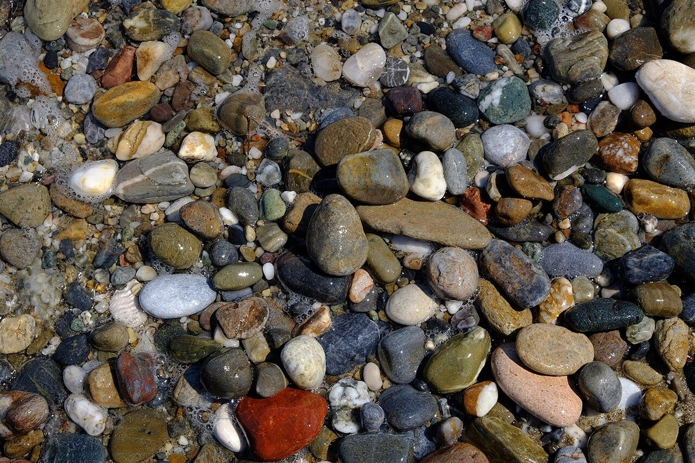

まちトープ
カフェ / 新潟県燕市宮町
新潟県燕市にあるカフェ「まちトープ」のご案内ページです。営業時間やメニューなど、詳しいことは準備中。まずはInstagramをのぞいてみてください。

制作側の連想
モグラの巣穴の間取り図
店名の由来は分かりません。制作側は「トープ」という言葉から、灰みがかった褐色の色名「トープ(taupe)」を連想しました。この言葉はフランス語でモグラを指す語でもあるそうです。そこでこのサイトは、土の色でまとめ、ページを「巣穴の部屋」に見立てた間取り図にしました。制作側の連想で、お店の理念・由来とは無関係です。
部屋の名前は遊びで付けたもので、お店の設備や内装を表すものではありません。
掘り出しもの
土のなかで見つけた、6枚。
石・霧・夕空などのフリー素材を並べました。燕市の風景ではなく、国外または撮影地不明のイメージです。
